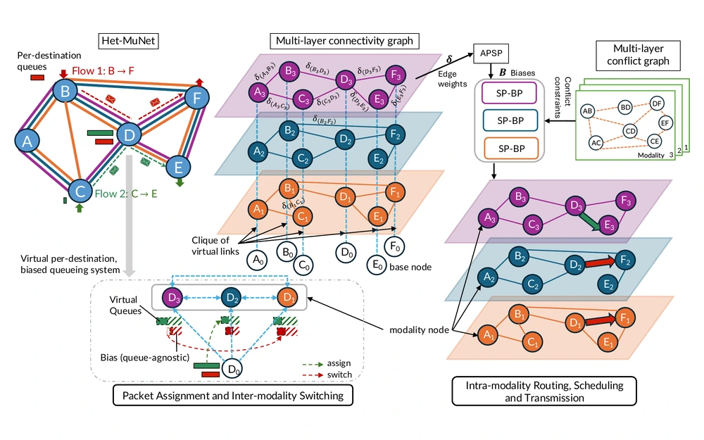

Biased Backpressure Routing for Multihop Wireless Networks with Heterogeneous Interfaces
IEEE Military Communications Conference (MILCOM), 2026
Develops a biased backpressure framework for multihop wireless networks with heterogeneous interfaces, coordinating routing, scheduling, and inter-interface switching through a multilayer graph model.